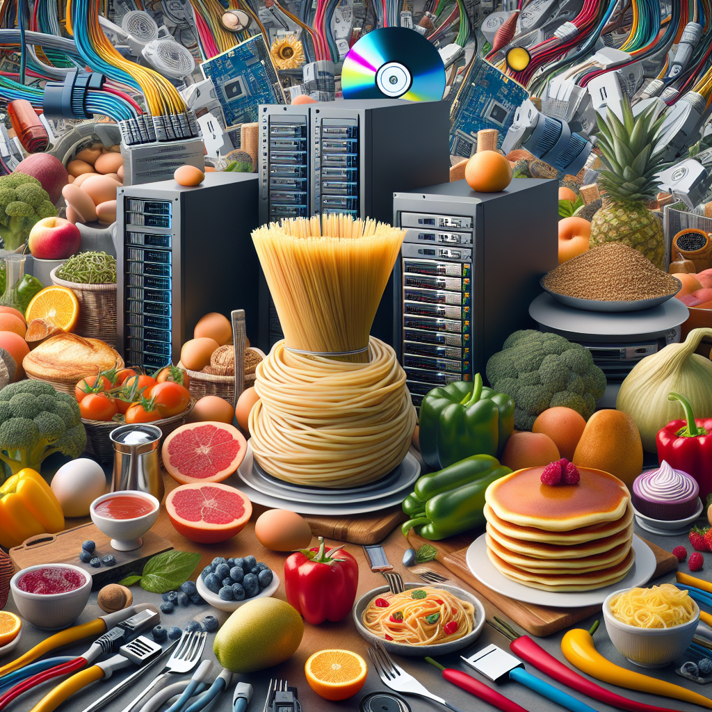
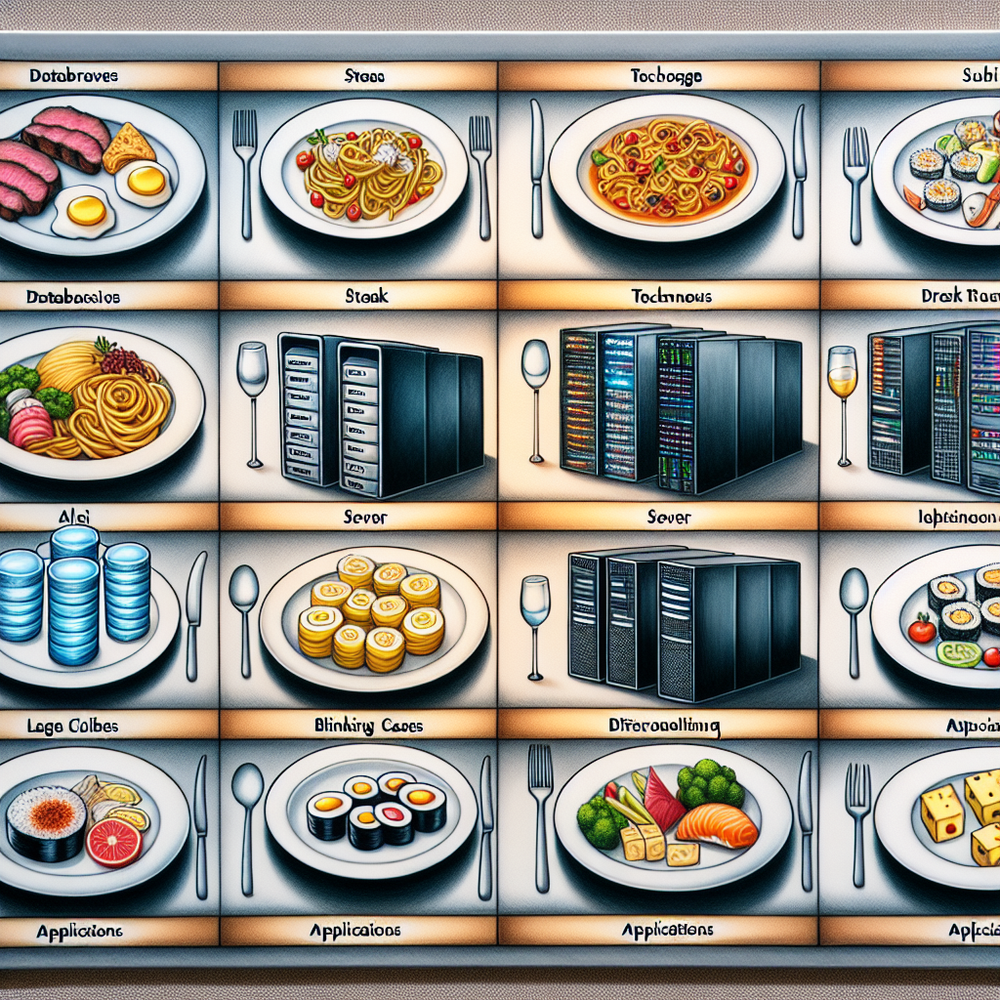
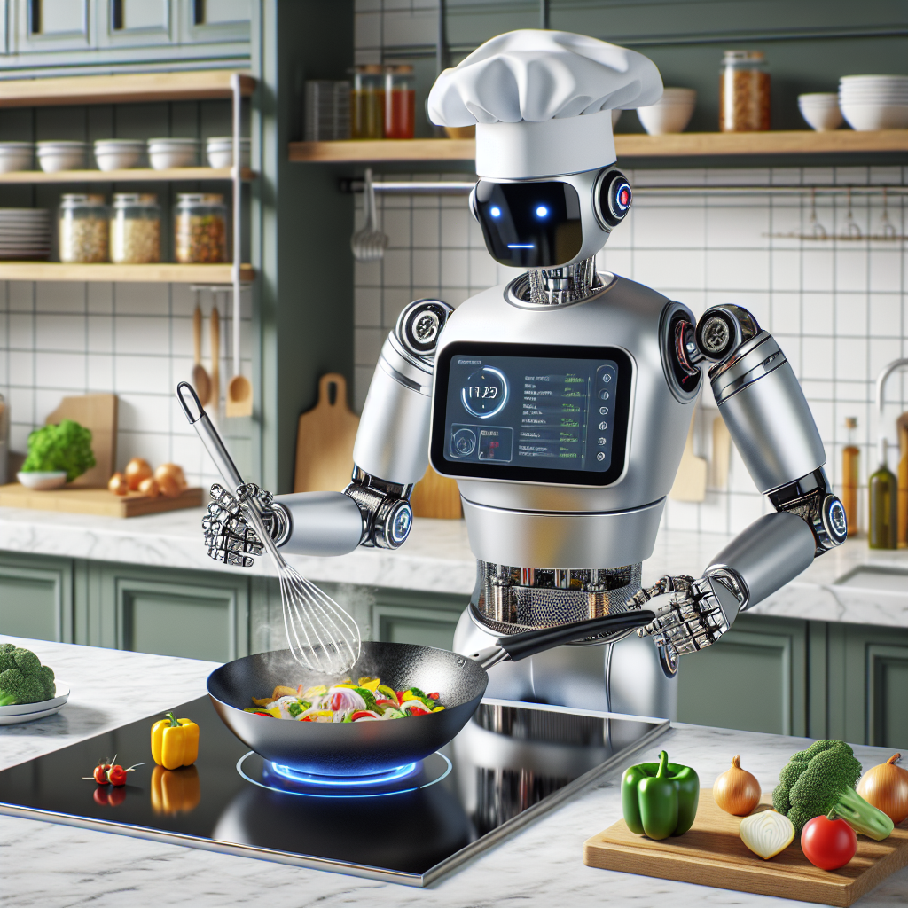
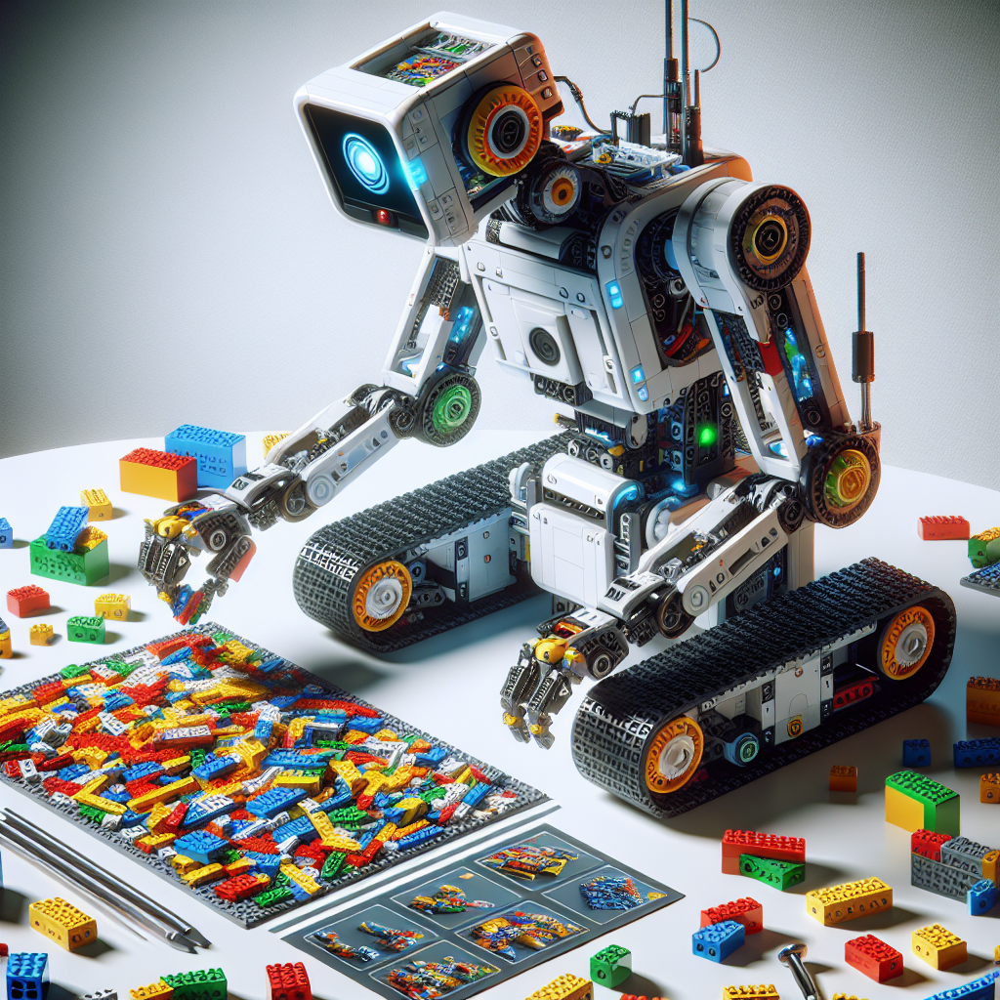
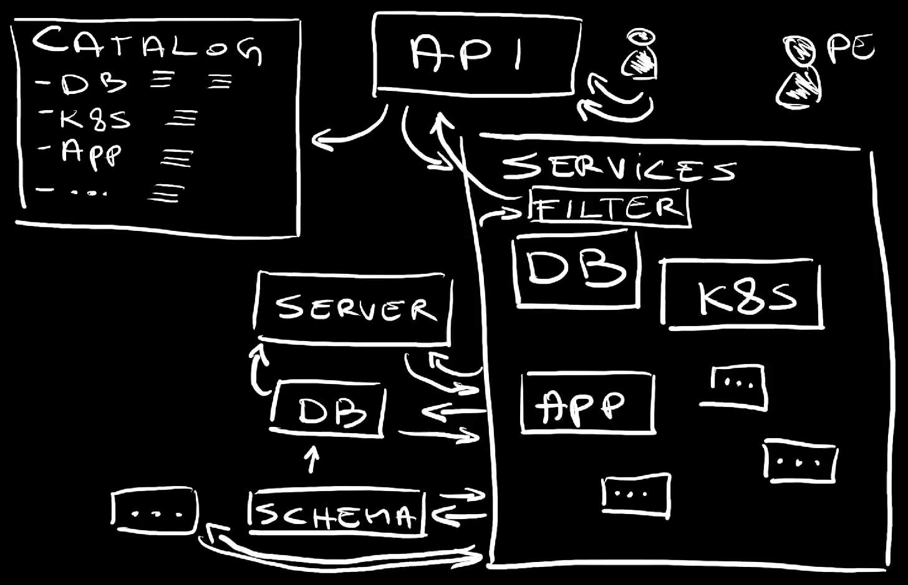
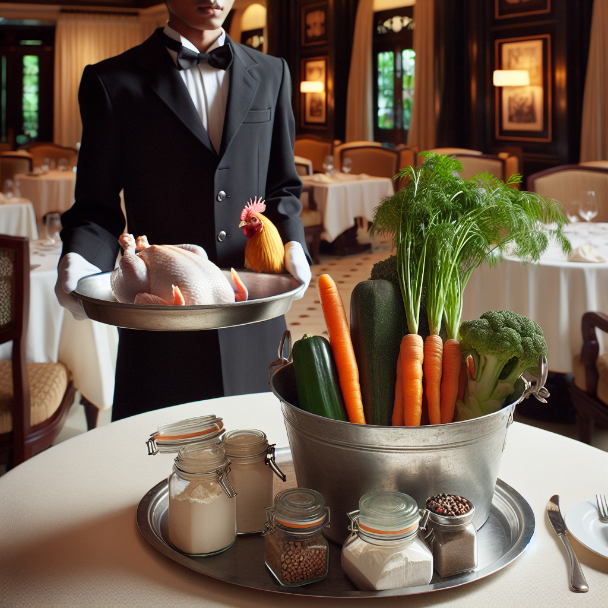

How Platform Engineering Compares to Running a Restaurant
Platform engineering should follow similar patterns as restaurants, yet we often confuse it with a kitchen or a supermarket.
Let me explain.
Some people like to cook. Few are actually skilled at cooking. Majority of us are skilled at something else and prefer a meal in a restaurant rather than cooking it ourselves, especially if that means putting a frozen pizza into a microwave.
For us not skilled in art of preparing meals, cooking is not something we’re looking forward to. Getting ingredients is a chore. We need to know what to buy, where to buy it, how much to buy, how to store it, how to prepare it, how to cook it, and how to serve it. We need to know what to do if something goes wrong. We need to know how much it costs, how long it takes, and when it will be ready.
I, for example, do not like cooking. I like writing code. I’m almost certainly better at writing code than cooking.
Sometimes I might combine both. Sometime I go to a restaurant, order a meal, and write code while waiting for it. I do what I do best, and someone else, in this case a cook, does what they do best.
Platform engineering is like a restaurant. It’s a set of services we offer to developers so that they can do what they need to do while maintaining the focus on their core business, on writing code.
That being said, there are certain rules in most of the restaurants. Those rules provide great experience to guests while, at the same time, enabling restaurant stuff to do their jobs. The major difference is that, in case of platform engineering, we might not need staff.
Here are the rules of a restaurant that we can apply to platform engineering:
To begin with, we do NOT order ingredients in a restaurant but meals. We can order a burger, or pasta, or pizza, or a steak. We do not order a caw, flour, and tomatoes.
The same can be said for platform engineering. We should not offer “ingredients” like networking, storage, or compute, but, rather a database server with databases and schemas, a highly available application, a production-ready cluster, and so on and so forth. We are offering solutions, rather than pieces of a puzzle that developers need to put together. We are offering meals, rather than ingredients.
Unless I am a cook or a networking expert, database administrator, or a security officer, I do not want to deal with ingredients. If I am a developer, I expect to consume everything my code might need as a ready-to-go solution.
Next, meals are ordered through a menu. The restaurant prepared a number of dishes that we can order. It cannot be anything we want. We cannot go into a restaurant and ask for a grilled snake with a side of fried grasshoppers, at least not in restaurants I visit. A restaurant can change the menu over time. It can add additional meals, it can improve on the existing meals, and it can remove the meals that are not popular. That does not mean that we cannot have a meal that is not in the menu. We can, but not necessarily in that restaurant. We are free to go home and cook our own meal any way we want. We can even open our own restaurant. But, in a specific restaurant, the menu is the catalog of what is available.
The same goes with platform engineering. We offer solutions that are decided in advance. We improve them over time, we add new ones, and we remove the ones that are not commonly used. Just as we are free to cook our own meals at home, developers are free to build their own solutions. They can even open their own platform engineering department. But, in a specific platform, the menu is the catalog of what is available. We call that a service catalog. It contains the list of solutions that are available to developers. It’s not a list of ingredients, it’s a list of meals.
The protocol for ordering a meal is simple. A waiter gives us the menu, we choose a meal, and we tell the waited what we chose. The waiter does not prepare meals. That’s done by cooks in the kitchen. The waiter is the interface between us the the kitchen stuff. We cannot go to the kitchen to take a peak and we cannot interact with cooks. We do not deal with dirty dishes, we do not clean the kitchen floor, and we do no cut the vegetables. Again, we are free to do all that at home, but not in a restaurant.
In platform engineering, the protocol we use to communicate with the system that provides solutions is API. It can be HTTP, gRPC, or anything else. What it cannot or, to be more precise, it should not be are scripts, random manifests, HCL or Helm files, or anything else that is not an API. Now, just as a waiter can be dressed casually or in a uniform or can speak with american or french access, the way we access those APIs can be direct or indirect through a CLI, a web interface, or a chatbot. But, in the end, it’s an API. Not building APIs is like not having waiters in a restaurant and expecting guests to deal with the same stuff as cooks or expecting cooks to read your mind. We adopted AWS, Google Cloud, Azure, and other hyperscalers mostly because they expose everything through their APIs. Just as you would not accept any of those if they would be a bunch of scripts, your customers, developers in your company, should not accept it either. Our customers, developers, are free to wrap those APIs into scripts, manifests, HCL, Helm files, or anything else they want. But, in the end, it’s all about APIs. Heck, we might even help them create those scripts, manifests, HCL, or Helm files. Still, it’s all about APIs. That’s the solution, everything else is a duct tape.
APIs are also one of the critical differences between restaurants and platform engineering. There are no humans involved in APIs. We are involved in designing them and making sure they are running, but we are not involved in fullfilling requests. A user wants something, that something is communicated to the “kitchen” through an API, and that’s it. If your API is a ticketing system, you’re doing it wrong. You can think of the API as a robot waiter. It works tirelesly at accepting your requests and propagating them to the system that creates whatever we need to be created.
Arguable, the critical components in a restaurant are cooks. It does not matter how well written menus are or how well behaved waiters are, if cooks are not good at what they do. We order something, and shortly afterwards that something is brought to us by a waiter. Behind the scenes, the waiter delivered the order to a cook who prepared that order and gave it to the waiter. The waiter then brought it to us. If we would have closed our eyes long enough, it would look like a meal materialized out of thin air. But it’s not only that. It’s not only about meals materializing in front of us, but those meals being delicious and what we expect them to be.
Similarly, platform engineering is also all about creating services that can be consumed by others. But, just as waiters are replaced by APIs, cooks are replaced by services. If we request, through an API, a database server with a few databases and a schema, there is no person on the other end that spins up a server, sets up a database server, creates a few databases, and applies a schema. It’s all happening automagically through services. Just as when we request an EC2 instance from AWS, there are no gremlins in their data centers that are running around and setting up a server for us. It’s all automated. Our job, as platform engineers is to create a system on the other end of the API that will do all that for us. Our job is to design and maintain services, rather than to spin up instances of those services.
The next rule is that restaurants need to offer some level of flexibility with the menu. We might have alergies that prevent us from eating certain ingredients or we might have taste slightly different from what the restaurant offers. I, for example, do not eat brocoli and if the dish I want contains it, I might ask for it to be removed. If i order a stake, waiter is likely going to ask me whether I want is rare, medium, or well done. Now, not everything is cosutomizable. Plates presented in a menu can be tweaked, but only up to a point. A friend of mine is vegan and she will not order a stake and ask for it to be made out of tofu. She will order something that is already vegan or close to be vegan. She might order a pizza and ask for cheese to be removed.
Hence, restaurants are flexible, but not too flexible. They offer a set of meals that can be customized to some extent. They do not offer a set of ingredients that can be combined in any way we want. That would be a supermarket. Ultimately, it’s up to us to choose the type of a restaurant. When I eat alone, I tend to go to a stake house but when I’m accompanied by my vegan friend, we tend to find a restaurant with the menu that suits both of us. We do not go to a vegan restaurant since I am never going to get a staake there.
Services offered through an internal platform follow the same logic. Services do what they are supposed to do. Database-as-a-Service cannot be transformed to become a Kubernetes cluster. If that’s what someone needs and it is not offered in the catalog, that someone needs to set it up themselves. But, if a service is close to what someone needs, they can ask for it to be customized. Just as a stake can be rare, medium, or well done, a database server can be small, medium, or large. Just as a stake can be served with a side of fries or a salad, a database server can be served with a few databases and schemas. Just as a stake can be served with a sauce, a database server can be served with a backup and a monitoring. Just as a stake can be served with a glass of wine, a database server can be served with a few read replicas. But, just as a stake cannot be transformed into a pizza, a database server cannot be transformed into a Kubernetes cluster.
Think of servies as being robots assembling lego blocks. Blocks are what they are but the end result can be different depending on instructions it received. The end solution might differ, but not too much. It cannot end up building a table from IKEA using lego blocks.
Menus need to have information. The most obvious one is the price. We want to know how much a meal costs so that we can make a decision whether we want to order it or not. We might expect to have an information whether it contains gluten or nuts. Now, that information is not supposed to be too detailed. We do not expect to see recipes in a menu.
That’s what grandmas are for. You can ask them how to mix ingredients to get the meal you remember from your childhood. Do not try to enter restaurant kitchen inquiring about the recipe.
Service catalogs should follow the same logic. We might want to know the price of a service. We might want to know whether a database is highly available or not, whether it is PostgreSQL or MySQL, whether it is encrypted or not, whether it is backed up or not, and so on and so forth. We do not expect to see a detailed description of how the service is implemented. That’s what documentation is for. You can read it if you want to know how the service is implemented. Most people do not care about that. They care about what the service does, how much it costs, and a few other details. Not providing any information is bad but providing too much information is also bad.
When we order, a waiter will tells us that our order will be ready soon. We will be informed if, for some reason, our order is delayed. We get feedback. When it does arrive, we might inspect it.
If we ordered a bottle of wine, we will be given an opportunity to taste it before we commit to it. When the stake arrives, we will be able to see whether it was done to our liking. If it’s too rare for our taste, we have the opportunity to send it back to be cooked a bit more. We can even update our order by ordering fries which we forgot to ask for initially. Now, we do not get a microscope to inspect the stake and we do not get a chemistry set to test the wine. We get just enough information to evaluate the meal and, if needed, to update our order.
In platform engineering, those examples are equivalent to observability. From the moment we request an instance of a service we should be able to observe the status, to see logs, to query metrics, and to see traces. We should be able to see real time cost as opposed to the estimated cost, when it will be ready, and whether something went wrong. Now, the part that many get wrong is by providing all that information in the same form as the information observed by service owners, the people that observe the whole system and people who manage those services. That is equivalent to getting a microscope to inspect the stake. We do not need that. We need observability data filtered and transformed into a format that is appropriate to service consumers, not service owners. Consumers are… well, consumers. They are not database administrators. If they were, they would be creating Database-as-a-Service, not consuming it. They are not Kubernetes experts, security officers, or network engineers. They are developers. They are people who write code and need that code running or talking to a database or… you get the point.
All in all, platform engineering is like opening and managing a restaurant. We build services for different types of needs developers need. That can be a way to create and manage databases, Kubernetes clusters, applications, or anything else . What those solutions are depends on the needs of our customers, of developers.
Solutions are offered in form of a catalog that contains the list of what can be instantiated . That catalog is equivalent to a menu.
We order instances of those solutions through an API . That API is equivalent to a waiter. It takes the order and sends it to the kitchen where meals are prepared. The menu, the service catalog, is a reflection of what can be prepared in the kitchen and, when done right, that catalog is auto-generated from APIs .
Once something is requested through the API, services behind that API does whatever needs to be done. That can be spinning up a server, setting up a database, creating a schema, and so on and so forth . That is equivalent to cooks in a restaurant.
Service instances can be customizable. Requests for service instances can be made without any additional information by simply requesting a database, or by customizing requests . API endpoints have schemas with default values. If no values are provided, defaults are used. Defaults can be overwritten with our custom values. That is equivalent to customizing a meal. Some data might not have default values and, in that case, service consumers are forced to provide additional information just as we have to specify whether we want a stake rare, medium, or well done.
Service catalogs provide the right level of information and hide the details that are not relevant to consumers. They might need to know the cost, the type of a database, whether it is encrypted, and so on and so forth. They might not need to know how the service is implemented, which VPC is used, what are the subnets, and majority of nitty-gritty details that matter to service providers, to you, but not to them. It is up to us to figure out how to filter relevant information and transform it into a format that is appropriate for service consumers.
Finally, service consumers need to have observability. They need to know status of service instances, logs, metrics, and traces. They need to know when something goes wrong, when it will be ready, and how much it actually costs. That information is also filtered and transformed into a format that is appropriate for service consumers. We don’t throw everything we have at them. We give them just enough information needed for them to have confidence in the system and understand how it affects their work .
All that is done without our direct involvement. We are not waitress, we are not cooks, we are not cleaning staff. We are designers of the restaurant, the kitchen, and the menu. We are the ones that make sure that everything is working properly. We are the ones that make sure that the restaurant is cleaned, that the kitchen is well equipped, and that the menu is up to date. We are the ones that make sure that the restaurant is running smoothly. Restaurant staff is automated. It consists of bits and bytes, not people.
We design and operate the API and what’s on the right of it. We do not operate what’s on the left. On the left are our users. They are the ones that order meals. They are the ones that consume those meals. They are the ones that pay for those meals. They are the ones that give us feedback. They are the ones that decide whether they will come back or not. They are the ones that decide whether they will recommend us to their colleagues. They are the ones that decide whether we will be successful or not.
Nevertheless, more often than not, we do not do those things. We do not design APIs and services but, rather, we give people a bunch of scripts and HCL files and Helm charts or we wrap those into some UIs. That would be similar to a waiter coming back to us with a bucket full of carrots, a chicken, and a bag of flour and saying “Here you go. I selected them for you and I already cut them, you do the rest.” That’s not what we expect in a restaurant and that’s not what we should expect in platform engineering.